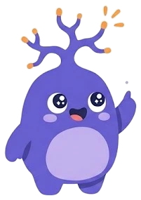

Miya tajribaga qarab oʻzgaradi
Yangi narsani oʻrganib, mashq qilganingizda miya oʻz aloqalarini oʻzgartira oladi.
Mavzu
“Miya tuzilishi” mavzusidagi faktlar — har biri tekshirilgan manba bilan.

Yuklanmoqda…
Yangi narsani oʻrganib, mashq qilganingizda miya oʻz aloqalarini oʻzgartira oladi.
Oʻsmirlikda miya hali rivojlanadi va 20 yoshlarning oʻrtasi yoki oxirida toʻliq yetiladi.
Miya tanaga nisbatan kichik, lekin u tana energiyasining qariyb beshdan bir qismini sarflaydi.
Miyangizda taxminan 86 milliard nerv hujayrasi va ularni qoʻllab-quvvatlaydigan deyarli shuncha boshqa hujayra bor.
Mielin — nervlarni oʻrab turuvchi yogʻli qobiq, u signallarning tez yetib borishiga yordam beradi.
Neyronlar sinaps deb ataladigan kichik boʻshliqlarda neyromediator moddalar yordamida xabar uzatadi.
Miyaning orqa qismidagi burmali kichik shar — miyacha — harakatlarni muvofiqlashtiradi.
Miyaning eng pastki qismi uxlayotganingizda ham nafas olishingiz va yuragingiz urishini taʼminlaydi.
Katta yoshli odamning miyasi taxminan 1,4 kg (uch funt) keladi.
Miyaning oʻng yarmi asosan tananing chap tomonini, chap yarmi esa oʻng tomonini boshqaradi.
Miyaning tashqi qatlami — poʻstloq — ustma-ust qoʻyilgan ikki-uch tanga qalinligida, ammo asosiy hisob-kitob shu yerda boʻladi.
Poʻstloq kulrang koʻrinadi, chunki u yerdagi nervlarda miyaning boshqa qismlarini oq qiladigan «izolyatsiya» yoʻq.
Miyaning burma va egatlari uning yuzasini kattalashtiradi, shuning uchun bosh suyagiga koʻproq kulrang modda sigʻadi.
Peshona ortidagi ikki boʻlak jadval tuzish, kelajakni tasavvur qilish va asosli bahslashishda koʻp ishni bajaradi.
Ovqatning taʼmi, hidi va tuzilishini his qilganingizda tepa boʻlaklari ishlaydi; ular oʻqish va hisoblashga ham yordam beradi.
Koʻzdan kelgan tasvirlarni miyaning orqa qismidagi ensa boʻlagi qayta ishlaydi.
Gipotalamus marvarid kattaligida, lekin u sizni ertalab uygʻotadi va imtihonda adrenalinni ishga tushiradi.
Neyronning tanasi, daraxt shoxlariga oʻxshash dendritlari va uzun dumga oʻxshash aksoni bor.
Miyada neyronlardan tashqari ularni qoʻllab-quvvatlaydigan gliya hujayralari ham bor.
Sezuvchi neyronlar sezgilarni miyaga olib boradi, harakat neyronlari mushaklarni boshqaradi, oraliq neyronlar esa ularni bogʻlaydi.
Neyronlar tanadagi eng uzoq yashaydigan hujayralar, va miyadagi neyronlarning aksariyati tugʻilishimizdan oldin paydo boʻladi.
Dofamin — kayfiyat va murakkab harakatlarni boshqarishda ishtirok etadigan kimyoviy xabarchi.
Uxlayotganda ham yurak va nafasni boshqaradigan uzunchoq miya bosh suyagining juda qalin qismi ostida yashiringan.
Oʻsmirlikda miya oʻzgarishlari doʻstlik va ijtimoiy tajribalarga koʻproq eʼtibor qaratishga olib kelishi mumkin.
Koʻp elektron sigaretlarda kuchli qaramlik keltiruvchi nikotin bor; u oʻsmirlarda diqqat, oʻrganish va kayfiyatga javobgar miya qismlariga zarar yetkazishi mumkin.
Stress — tashqi sababga javob va u vaziyat hal boʻlgach oʻtadi; xavotir esa xavf boʻlmasa ham saqlanib qolishi mumkin.
Burun orqali sekin nafas olib, ogʻiz orqali chiqaring, har birida 1 dan 5 gacha sanang — kamida 5 daqiqa.
Ongli hozirlik (mindfulness) — hozirgi lahzaga baho bermasdan eʼtibor qaratish.
NIMH har kuni nimadan minnatdor ekaningizni aniq eslab yoki yozib qoʻyishni maslahat beradi.
Oʻsmir miyasi hali rivojlanayotgani uchun stressga kattalardan boshqacha javob berishi mumkin; yengish usullarini bilish yordam beradi.
Oʻsmirlik qiyinchiliklariga qaramay, aksariyat oʻsmirlar sogʻlom kattalarga aylanadi.